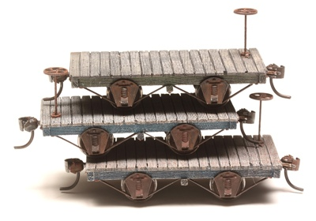
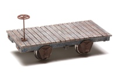
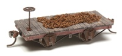
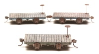
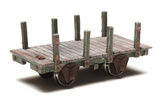
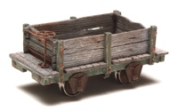
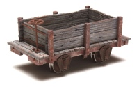
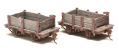
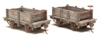
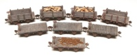

Boulder Valley Models 4-Wheel Pedestal Flat Cars, SC-2
Click any image for a larger view in a new browser tab.
| Just 10 feet long, these little flat cars from BVM are as cute as a button, and perfect for nearly any short line operation. And as my collection proves, a lot like chips. One is not enough!
Like all the BVM offerings, they are cast in white resin, beautifully detailed and go together quickly and easily. They are offered in two versions. I chose the wide deck SC-2, while the narrow SC-1 version has deck planking that ends flush with the under frame. |
 | |
|---|---|---|
|  |  |  |
|
I have built two sets of four. The set shown above as flat cars, as designed. None have actual loads yet. The chain shown on the red one is just laying there. Adding a few crates and barrels should do for another, while I will save out the remaining pair to stay empty for now. Note also the difference between the single cars above. The first without couplers also doesn't have the optional strapping in place. While a bit fidgety, it was well worth the effort.
The second set below is personalized with side stakes and planking, boxing them in as mini gondolas. I also mixed up the stake count, with the six-stake boxes ultimately intended for lighter loads such as cord wood, while the more robust eight-stake versions will carry denser loads such as ballast, coal or gravel. | ||
|  |  |  |
| Sharp eyes will notice that the main frames are painted in standard boxcar red, as well as green and blue, suggesting they were acquired, or just built by the line shop, at different times.
The side stakes were originally components for the BVM #513 Woorkboose kit, and do the job nicely here a well. I used the stakes with the hand grab anchors at the ends, then simulated tie rods with thin music wire between them. The center stakes are the plain ones. | ||
|  |  |  |
| The box planking is poplar that I cut to size and textured using wire brushes and a razor saw before giving a rinse in denatured alcohol and leather dye. As with my other BVM projects, I achieved the rustic look using acrylic craft paints, and Bragdon weathering powders applied both dry and with alcohol. The loads will be finalized as the layout progresses. |  | |
Unfortunately, this kit is no longer available. Boulder Valley Models closed not long after I bought mine.
Copyright 2016-2024, Thayer Syme
All rights reserved